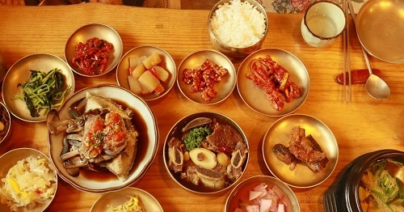
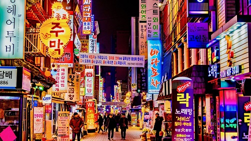

| Soul - South Korea | Hi: 81° Lo:62° | Humidity: 51%
| Soul - South Korea | Hi: 81° Lo:62° | Humidity: 51%
Natural beauty: South Korea boasts stunning natural landscapes. From picturesque mountains like Seoraksan to beautiful coastal areas such as Jeju Island, the country offers a diverse range of natural attractions for outdoor enthusiasts. The Korean alphabet: South Korea has its own unique alphabet called "Hangeul." It was created during the 15th century and is considered one of the most scientific writing systems in the world.
Confucian influence: Confucianism has had a significant impact on Korean culture and society. Values such as respect for elders, emphasis on education, and strong family ties are deeply ingrained in the social fabric of South Korea.

For Koreans, rice is a staple food. Their typical side dishes are soups (tang), pot-stews with various ingredients (jjigae and jeongol), cooked vegetables, salads, pickles, salted seafood, dried fishes, and steamed meat. Kimchi, paste or sauce, and salted seafood are always served.

Technological innovation: South Korea is known for its technological advancements. It has one of the fastest internet speeds globally and is a leader in technology companies such as Samsung and LG. Gaming culture: South Korea is renowned for its vibrant gaming culture. Professional gaming, known as eSports, is taken very seriously, and South Korean players have achieved significant success in global competitions.